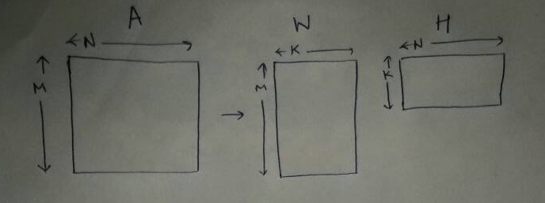
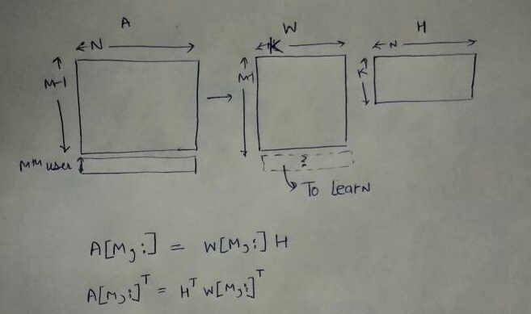
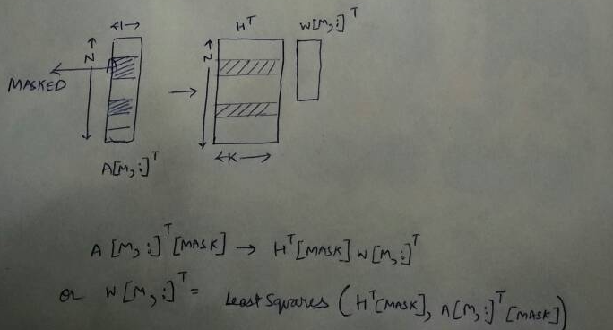

I have written a bunch of posts on this blog about non-negative matrix factorisation (NNMF). However, all of them involved the test user to be a part of the matrix that we factorise to learn the latent factors. Is that always the case? Read on to find more!
Our goal is given a matrix A, decompose it into two non-negative factors, as follows:
$ A_{M \times N} \approx W_{M \times K} \times H_{K \times N} $, such that $ W_{M \times K} \ge 0$ and $ H_{K \times N} \ge 0$

Imagine that we have trained the model for M-1 users on N movies. Now, the $M^{th}$ user has rated some movies. Do we retrain the model from scratch to consider $M^{th}$ user? This can be a very expensive operation!

Instead, as shown in above figure, we will learn the user factor for the $M^{th}$ user. We can do this the shared movie factor (H) has already been learnt.
We can formulate as follows:
$$ A[M,:] = W[M,:]H $$
Taking transpose both sides
$$ A[M,:]^T = H^T W[M,:]^T $$
However, $A[M,:]^T$ will have missing entries. Thus, we can mask those entries from the calculation as shown below.

Thus, we can write
$$ W[M,:]^T = \mathrm{Least Squares} (H^T[Mask], A[M,:]^T[Mask]) $$
If instead we want the factors to be non-negative, we can use non-negative least squares instead of usual least squares for this estimation.
I'll now present a simple code example to illustrate the procedure.
import numpy as np
import pandas as pd
M, N = 20, 10
np.random.seed(0)
A_orig = np.abs(np.random.uniform(low=0.0, high=1.0, size=(M,N)))
pd.DataFrame(A_orig).head()
A = A_orig.copy()
A[0, 0] = np.NAN
A[3, 1] = np.NAN
A[6, 3] = np.NAN
# Masking for last user.
A[19, 2] = np.NAN
A[19, 7] = np.NAN
We will be using A2 (first 19 users) matrix for learning the movie factors and the user factors for the 19 users
A2 = A[:-1,:]
A2.shape
A_df = pd.DataFrame(A)
A_df.head()
K = 4
W = np.abs(np.random.uniform(low=0, high=1, size=(M-1, K)))
H = np.abs(np.random.uniform(low=0, high=1, size=(K, N)))
W = np.divide(W, K*W.max())
H = np.divide(H, K*H.max())
pd.DataFrame(W).head()
pd.DataFrame(H).head()
def cost(A, W, H):
from numpy import linalg
WH = np.dot(W, H)
A_WH = A-WH
return linalg.norm(A_WH, 'fro')
However, since A has missing entries, we have to define the cost in terms of the entries present in A
def cost(A, W, H):
from numpy import linalg
mask = pd.DataFrame(A).notnull().values
WH = np.dot(W, H)
WH_mask = WH[mask]
A_mask = A[mask]
A_WH_mask = A_mask-WH_mask
# Since now A_WH_mask is a vector, we use L2 instead of Frobenius norm for matrix
return linalg.norm(A_WH_mask, 2)
Let us just try to see the cost of the initial set of values of W and H we randomly assigned. Notice, we pass A2!
cost(A2, W, H)
num_iter = 1000
num_display_cost = max(int(num_iter/10), 1)
from scipy.optimize import nnls
for i in range(num_iter):
if i%2 ==0:
# Learn H, given A and W
for j in range(N):
mask_rows = pd.Series(A2[:,j]).notnull()
H[:,j] = nnls(W[mask_rows], A2[:,j][mask_rows])[0]
else:
for j in range(M-1):
mask_rows = pd.Series(A2[j,:]).notnull()
W[j,:] = nnls(H.transpose()[mask_rows], A2[j,:][mask_rows])[0]
WH = np.dot(W, H)
c = cost(A2, W, H)
if i%num_display_cost==0:
print i, c
A_pred = pd.DataFrame(np.dot(W, H))
A_pred.head()
A_m = A[-1,:]
A_m_transpose = A_m.T
mask = ~np.isnan(A_m_transpose)
W_m = nnls(H.T[mask], A_m_transpose[mask])[0]
W_m
ratings_m_home = np.dot(H.T, W_m)
ratings_m_home[~mask]
A_orig[-1,:][~mask]
There you go, we are able to get ratings for the $M^{th}$ user for the movies that they have not seen. We only trained the model on the other users! Ofcourse, these numbers might not look so impressive. However, this was just a toy example based on random data. In reality, we could expect better results!